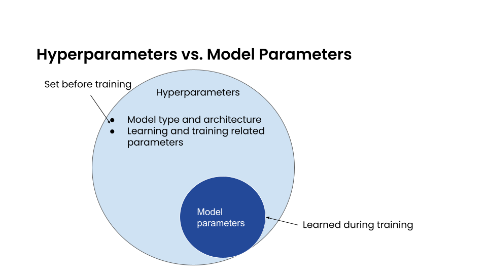

Ray Tune FAQ#
Here we try to answer questions that come up often. If you still have questions after reading this FAQ, let us know!
What are Hyperparameters?#
What are hyperparameters? And how are they different from model parameters?
In supervised learning, we train a model with labeled data so the model can properly identify new data values. Everything about the model is defined by a set of parameters, such as the weights in a linear regression. These are model parameters; they are learned during training.
In contrast, the hyperparameters define structural details about the kind of model itself, like whether or not we are using a linear regression or classification, what architecture is best for a neural network, how many layers, what kind of filters, etc. They are defined before training, not learned.

Other quantities considered hyperparameters include learning rates, discount rates, etc. If we want our training process and resulting model to work well, we first need to determine the optimal or near-optimal set of hyperparameters.
How do we determine the optimal hyperparameters? The most direct approach is to perform a loop where we pick
a candidate set of values from some reasonably inclusive list of possible values, train a model, compare the results
achieved with previous loop iterations, and pick the set that performed best. This process is called
Hyperparameter Tuning or Optimization (HPO). And hyperparameters are specified over a configured and confined
search space, collectively defined for each hyperparameter in a config dictionary.
Which search algorithm/scheduler should I choose?#
Ray Tune offers many different search algorithms and schedulers. Deciding on which to use mostly depends on your problem:
Is it a small or large problem (how long does it take to train? How costly are the resources, like GPUs)? Can you run many trials in parallel?
How many hyperparameters would you like to tune?
What values are valid for hyperparameters?
If your model returns incremental results (eg. results per epoch in deep learning,
results per each added tree in GBDTs, etc.) using early stopping usually allows for sampling
more configurations, as unpromising trials are pruned before they run their full course.
Please note that not all search algorithms can use information from pruned trials.
Early stopping cannot be used without incremental results - in case of the functional API,
that means that session.report() has to be called more than once - usually in a loop.
If your model is small, you can usually try to run many different configurations. A random search can be used to generate configurations. You can also grid search over some values. You should probably still use ASHA for early termination of bad trials (if your problem supports early stopping).
If your model is large, you can try to either use Bayesian Optimization-based search algorithms like BayesOpt to get good parameter configurations after few trials. Ax is similar but more robust to noisy data. Please note that these algorithms only work well with a small number of hyperparameters. Alternatively, you can use Population Based Training which works well with few trials, e.g. 8 or even 4. However, this will output a hyperparameter schedule rather than one fixed set of hyperparameters.
If you have a small number of hyperparameters, Bayesian Optimization methods work well. Take a look at BOHB or Optuna with the ASHA scheduler to combine the benefits of Bayesian Optimization with early stopping.
If you only have continuous values for hyperparameters this will work well with most Bayesian Optimization methods. Discrete or categorical variables still work, but less good with an increasing number of categories.
If you have many categorical values for hyperparameters, consider using random search, or a TPE-based Bayesian Optimization algorithm such as Optuna or HyperOpt.
Our go-to solution is usually to use random search with ASHA for early stopping for smaller problems. Use BOHB for larger problems with a small number of hyperparameters and Population Based Training for larger problems with a large number of hyperparameters if a learning schedule is acceptable.
How do I choose hyperparameter ranges?#
A good start is to look at the papers that introduced the algorithms, and also to see what other people are using.
Most algorithms also have sensible defaults for some of their parameters.
For instance, XGBoost’s parameter overview
reports to use max_depth=6 for the maximum decision tree depth. Here, anything
between 2 and 10 might make sense (though that naturally depends on your problem).
For learning rates, we suggest using a loguniform distribution between
1e-5 and 1e-1: tune.loguniform(1e-5, 1e-1).
For batch sizes, we suggest trying powers of 2, for instance, 2, 4, 8, 16, 32, 64, 128, 256, etc. The magnitude depends on your problem. For easy problems with lots of data, use higher batch sizes, for harder problems with not so much data, use lower batch sizes.
For layer sizes we also suggest trying powers of 2. For small problems (e.g. Cartpole), use smaller layer sizes. For larger problems, try larger ones.
For discount factors in reinforcement learning we suggest sampling uniformly between 0.9 and 1.0. Depending on the problem, a much stricter range above 0.97 or oeven above 0.99 can make sense (e.g. for Atari).
How can I use nested/conditional search spaces?#
Sometimes you might need to define parameters whose value depend on the value of other parameters. Ray Tune offers some methods to define these.
Nested spaces#
You can nest hyperparameter definition in sub dictionaries:
config = {"a": {"x": tune.uniform(0, 10)}, "b": tune.choice([1, 2, 3])}
The trial config will be nested exactly like the input config.
Conditional spaces#
Custom and conditional search spaces are explained in detail here.
In short, you can pass custom functions to tune.sample_from() that can
return values that depend on other values:
config = {
"a": tune.randint(5, 10),
"b": tune.sample_from(lambda spec: np.random.randint(0, spec.config.a)),
}
Conditional grid search#
If you would like to grid search over two parameters that depend on each other,
this might not work out of the box. For instance say that a should be a value
between 5 and 10 and b should be a value between 0 and a. In this case, we
cannot use tune.sample_from because it doesn’t support grid searching.
The solution here is to create a list of valid tuples with the help of a helper function, like this:
def _iter():
for a in range(5, 10):
for b in range(a):
yield a, b
config = {
"ab": tune.grid_search(list(_iter())),
}
Your trainable then can do something like a, b = config["ab"] to split
the a and b variables and use them afterwards.
How does early termination (e.g. Hyperband/ASHA) work?#
Early termination algorithms look at the intermediately reported values,
e.g. what is reported to them via session.report() after each training
epoch. After a certain number of steps, they then remove the worst
performing trials and keep only the best performing trials. Goodness of a trial
is determined by ordering them by the objective metric, for instance accuracy
or loss.
In ASHA, you can decide how many trials are early terminated.
reduction_factor=4 means that only 25% of all trials are kept each
time they are reduced. With grace_period=n you can force ASHA to
train each trial at least for n epochs.
Why are all my trials returning “1†iteration?#
This is most likely applicable for the Tune function API.
Ray Tune counts iterations internally every time session.report() is
called. If you only call session.report() once at the end of the training,
the counter has only been incremented once. If you’re using the class API,
the counter is increased after calling step().
Note that it might make sense to report metrics more often than once. For instance, if you train your algorithm for 1000 timesteps, consider reporting intermediate performance values every 100 steps. That way, schedulers like Hyperband/ASHA can terminate bad performing trials early.
What are all these extra outputs?#
You’ll notice that Ray Tune not only reports hyperparameters (from the
config) or metrics (passed to session.report()), but also some other
outputs.
Result for easy_objective_c64c9112:
date: 2020-10-07_13-29-18
done: false
experiment_id: 6edc31257b564bf8985afeec1df618ee
experiment_tag: 7_activation=tanh,height=-53.116,steps=100,width=13.885
hostname: ubuntu
iterations: 0
iterations_since_restore: 1
mean_loss: 4.688385317424468
neg_mean_loss: -4.688385317424468
node_ip: 192.168.1.115
pid: 5973
time_since_restore: 7.605552673339844e-05
time_this_iter_s: 7.605552673339844e-05
time_total_s: 7.605552673339844e-05
timestamp: 1602102558
timesteps_since_restore: 0
training_iteration: 1
trial_id: c64c9112
See the How to use log metrics in Tune? section for a glossary.
How do I set resources?#
If you want to allocate specific resources to a trial, you can use the
tune.with_resources and wrap it around you trainable together with
a dict or a PlacementGroupFactory object:
tuner = tune.Tuner(
tune.with_resources(
train_fn, resources={"cpu": 2, "gpu": 0.5, "custom_resources": {"hdd": 80}}
),
)
tuner.fit()
The example above showcases three things:
The
cpuandgpuoptions set how many CPUs and GPUs are available for each trial, respectively. Trials cannot request more resources than these (exception: see 3).It is possible to request fractional GPUs. A value of 0.5 means that half of the memory of the GPU is made available to the trial. You will have to make sure yourself that your model still fits on the fractional memory.
You can request custom resources you supplied to Ray when starting the cluster. Trials will only be scheduled on single nodes that can provide all resources you requested.
One important thing to keep in mind is that each Ray worker (and thus each Ray Tune Trial) will only be scheduled on one machine. That means if you for instance request 2 GPUs for your trial, but your cluster consists of 4 machines with 1 GPU each, the trial will never be scheduled.
In other words, you will have to make sure that your Ray cluster has machines that can actually fulfill your resource requests.
In some cases your trainable might want to start other remote actors, for instance if you’re leveraging distributed training via Ray Train. In these cases, you can use placement groups to request additional resources:
tuner = tune.Tuner(
tune.with_resources(
train_fn,
resources=tune.PlacementGroupFactory(
[
{"CPU": 2, "GPU": 0.5, "hdd": 80},
{"CPU": 1},
{"CPU": 1},
],
strategy="PACK",
),
)
)
tuner.fit()
Here, you’re requesting 2 additional CPUs for remote tasks. These two additional
actors do not necessarily have to live on the same node as your main trainable.
In fact, you can control this via the strategy parameter. In this example, PACK
will try to schedule the actors on the same node, but allows them to be scheduled
on other nodes as well. Please refer to the
placement groups documentation to learn more
about these placement strategies.
You can also allocate specific resources to a trial based on a custom rule via lambda functions. For instance, if you want to allocate GPU resources to trials based on a setting in your param space:
tuner = tune.Tuner(
tune.with_resources(
train_fn,
resources=lambda config: {"GPU": 1} if config["use_gpu"] else {"GPU": 0},
),
param_space={
"use_gpu": True,
},
)
tuner.fit()
Why is my training stuck and Ray reporting that pending actor or tasks cannot be scheduled?#
This is usually caused by Ray actors or tasks being started by the trainable without the trainable resources accounting for them, leading to a deadlock. This can also be “stealthly†caused by using other libraries in the trainable that are based on Ray, such as Modin. In order to fix the issue, request additional resources for the trial using placement groups, as outlined in the section above.
For example, if your trainable is using Modin dataframes, operations on those will spawn Ray tasks. By allocating an additional CPU bundle to the trial, those tasks will be able to run without being starved of resources.
def train_fn(config):
# some Modin operations here
# import modin.pandas as pd
tune.report({"metric": metric})
tuner = tune.Tuner(
tune.with_resources(
train_fn,
resources=tune.PlacementGroupFactory(
[
{"CPU": 1}, # this bundle will be used by the trainable itself
{"CPU": 1}, # this bundle will be used by Modin
],
strategy="PACK",
),
)
)
tuner.fit()
How can I pass further parameter values to my trainable?#
Ray Tune expects your trainable functions to accept only up to two parameters,
config and checkpoint_dir. But sometimes there are cases where
you want to pass constant arguments, like the number of epochs to run,
or a dataset to train on. Ray Tune offers a wrapper function to achieve
just that, called tune.with_parameters():
from ray import tune
import numpy as np
def train_func(config, num_epochs=5, data=None):
for i in range(num_epochs):
for sample in data:
# ... train on sample
pass
# Some huge dataset
data = np.random.random(size=100000000)
tuner = tune.Tuner(tune.with_parameters(train_func, num_epochs=5, data=data))
tuner.fit()
This function works similarly to functools.partial, but it stores
the parameters directly in the Ray object store. This means that you
can pass even huge objects like datasets, and Ray makes sure that these
are efficiently stored and retrieved on your cluster machines.
tune.with_parameters()
also works with class trainables. Please see
tune.with_parameters() for more details and examples.
How can I reproduce experiments?#
Reproducing experiments and experiment results means that you get the exact same results when running an experiment again and again. To achieve this, the conditions have to be exactly the same each time you run the experiment. In terms of ML training and tuning, this mostly concerns the random number generators that are used for sampling in various places of the training and tuning lifecycle.
Random number generators are used to create randomness, for instance to sample a hyperparameter value for a parameter you defined. There is no true randomness in computing, rather there are sophisticated algorithms that generate numbers that seem to be random and fulfill all properties of a random distribution. These algorithms can be seeded with an initial state, after which the generated random numbers are always the same.
import random
random.seed(1234)
output = [random.randint(0, 100) for _ in range(10)]
# The output will always be the same.
assert output == [99, 56, 14, 0, 11, 74, 4, 85, 88, 10]
The most commonly used random number generators from Python libraries are those in the
native random submodule and the numpy.random module.
# This should suffice to initialize the RNGs for most Python-based libraries
import random
import numpy as np
random.seed(1234)
np.random.seed(5678)
In your tuning and training run, there are several places where randomness occurs, and at all these places we will have to introduce seeds to make sure we get the same behavior.
Search algorithm: Search algorithms have to be seeded to generate the same hyperparameter configurations in each run. Some search algorithms can be explicitly instantiated with a random seed (look for a
seedparameter in the constructor). For others, try to use the above code block.Schedulers: Schedulers like Population Based Training rely on resampling some of the parameters, requiring randomness. Use the code block above to set the initial seeds.
Training function: In addition to initializing the configurations, the training functions themselves have to use seeds. This could concern e.g. the data splitting. You should make sure to set the seed at the start of your training function.
PyTorch and TensorFlow use their own RNGs, which have to be initialized, too:
import torch
torch.manual_seed(0)
import tensorflow as tf
tf.random.set_seed(0)
You should thus seed both Ray Tune’s schedulers and search algorithms, and the training code. The schedulers and search algorithms should always be seeded with the same seed. This is also true for the training code, but often it is beneficial that the seeds differ between different training runs.
Here’s a blueprint on how to do all this in your training code:
import random
import numpy as np
from ray import tune
def trainable(config):
# config["seed"] is set deterministically, but differs between training runs
random.seed(config["seed"])
np.random.seed(config["seed"])
# torch.manual_seed(config["seed"])
# ... training code
config = {
"seed": tune.randint(0, 10000),
# ...
}
if __name__ == "__main__":
# Set seed for the search algorithms/schedulers
random.seed(1234)
np.random.seed(1234)
# Don't forget to check if the search alg has a `seed` parameter
tuner = tune.Tuner(trainable, param_space=config)
tuner.fit()
Please note that it is not always possible to control all sources of non-determinism. For instance, if you use schedulers like ASHA or PBT, some trials might finish earlier than other trials, affecting the behavior of the schedulers. Which trials finish first can however depend on the current system load, network communication, or other factors in the environment that we cannot control with random seeds. This is also true for search algorithms such as Bayesian Optimization, which take previous results into account when sampling new configurations. This can be tackled by using the synchronous modes of PBT and Hyperband, where the schedulers wait for all trials to finish an epoch before deciding which trials to promote.
We strongly advise to try reproduction on smaller toy problems first before relying on it for larger experiments.
How can I avoid bottlenecks?#
Sometimes you might run into a message like this:
The `experiment_checkpoint` operation took 2.43 seconds to complete, which may be a performance bottleneck
Most commonly, the experiment_checkpoint operation is throwing this warning, but it might be something else,
like process_trial_result.
These operations should usually take less than 500ms to complete. When it consistently takes longer, this might indicate a problem or inefficiencies. To get rid of this message, it is important to understand where it comes from.
These are the main reasons this problem comes up:
The Trial config is very large
This is the case if you e.g. try to pass a dataset or other large object via the config parameter.
If this is the case, the dataset is serialized and written to disk repeatedly during experiment
checkpointing, which takes a long time.
Solution: Use tune.with_parameters to pass large objects to
function trainables via the objects store. For class trainables you can do this manually via ray.put()
and ray.get(). If you need to pass a class definition, consider passing an
indicator (e.g. a string) instead and let the trainable select the class instead. Generally, your config
dictionary should only contain primitive types, like numbers or strings.
The Trial result is very large
This is the case if you return objects, data, or other large objects via the return value of step() in
your class trainable or to session.report() in your function trainable. The effect is the same as above:
The results are repeatedly serialized and written to disk, and this can take a long time.
Solution: Use checkpoint by writing data to the trainable’s current working directory instead. There are various ways to do that depending on whether you are using class or functional Trainable API.
You are training a large number of trials on a cluster, or you are saving huge checkpoints
Solution: You can use cloud checkpointing to save logs and checkpoints to a specified storage_path.
This is the preferred way to deal with this. All syncing will be taken care of automatically, as all nodes
are able to access the cloud storage. Additionally, your results will be safe, so even when you’re working on
pre-emptible instances, you won’t lose any of your data.
You are reporting results too often
Each result is processed by the search algorithm, trial scheduler, and callbacks (including loggers and the trial syncer). If you’re reporting a large number of results per trial (e.g. multiple results per second), this can take a long time.
Solution: The solution here is obvious: Just don’t report results that often. In class trainables, step()
should maybe process a larger chunk of data. In function trainables, you can report only every n-th iteration
of the training loop. Try to balance the number of results you really need to make scheduling or searching
decisions. If you need more fine grained metrics for logging or tracking, consider using a separate logging
mechanism for this instead of the Ray Tune-provided progress logging of results.
How can I develop and test Tune locally?#
First, follow the instructions in Building Ray (Python Only) to develop Tune without compiling Ray.
After Ray is set up, run pip install -r ray/python/ray/tune/requirements-dev.txt to install all packages
required for Tune development. Now, to run all Tune tests simply run:
pytest ray/python/ray/tune/tests/
If you plan to submit a pull request, we recommend you to run unit tests locally beforehand to speed up the review process. Even though we have hooks to run unit tests automatically for each pull request, it’s usually quicker to run them on your machine first to avoid any obvious mistakes.
How can I get started contributing to Tune?#
We use Github to track issues, feature requests, and bugs. Take a look at the ones labeled “good first issue†and “help wanted†for a place to start. Look for issues with “[tune]†in the title.
Note
If raising a new issue or PR related to Tune, be sure to include “[tune]†in the title and add a tune label.
How can I make my Tune experiments reproducible?#
Exact reproducibility of machine learning runs is hard to achieve. This is even more true in a distributed setting, as more non-determinism is introduced. For instance, if two trials finish at the same time, the convergence of the search algorithm might be influenced by which trial result is processed first. This depends on the searcher - for random search, this shouldn’t make a difference, but for most other searchers it will.
If you try to achieve some amount of reproducibility, there are two places where you’ll have to set random seeds:
On the driver program, e.g. for the search algorithm. This will ensure that at least the initial configurations suggested by the search algorithms are the same.
In the trainable (if required). Neural networks are usually initialized with random numbers, and many classical ML algorithms, like GBDTs, make use of randomness. Thus you’ll want to make sure to set a seed here so that the initialization is always the same.
Here is an example that will always produce the same result (except for trial runtimes).
import numpy as np
from ray import tune
def train_func(config):
# Set seed for trainable random result.
# If you remove this line, you will get different results
# each time you run the trial, even if the configuration
# is the same.
np.random.seed(config["seed"])
random_result = np.random.uniform(0, 100, size=1).item()
tune.report({"result": random_result})
# Set seed for Ray Tune's random search.
# If you remove this line, you will get different configurations
# each time you run the script.
np.random.seed(1234)
tuner = tune.Tuner(
train_func,
tune_config=tune.TuneConfig(
num_samples=10,
search_alg=tune.search.BasicVariantGenerator(),
),
param_space={"seed": tune.randint(0, 1000)},
)
tuner.fit()
Some searchers use their own random states to sample new configurations.
These searchers usually accept a seed parameter that can be passed on
initialization. Other searchers use Numpy’s np.random interface -
these seeds can be then set with np.random.seed(). We don’t offer an
interface to do this in the searcher classes as setting a random seed
globally could have side effects. For instance, it could influence the
way your dataset is split. Thus, we leave it up to the user to make
these global configuration changes.
How can I use large datasets in Tune?#
You often will want to compute a large object (e.g., training data, model weights) on the driver and use that object within each trial.
Tune provides a wrapper function tune.with_parameters() that allows you to broadcast large objects to your trainable.
Objects passed with this wrapper will be stored on the Ray object store and will
be automatically fetched and passed to your trainable as a parameter.
Tip
If the objects are small in size or already exist in the Ray Object Store, there’s no need to use tune.with_parameters(). You can use partials or pass in directly to config instead.
from ray import tune
import numpy as np
def f(config, data=None):
pass
# use data
data = np.random.random(size=100000000)
tuner = tune.Tuner(tune.with_parameters(f, data=data))
tuner.fit()
How can I upload my Tune results to cloud storage?#
See Configuring Tune with cloud storage (AWS S3, Google Cloud Storage).
Make sure that worker nodes have the write access to the cloud storage.
Failing to do so would cause error messages like Error message (1): fatal error: Unable to locate credentials.
For AWS set up, this involves adding an IamInstanceProfile configuration for worker nodes.
Please see here for more tips.
How can I use Tune with Kubernetes?#
You should configure shared storage. See this user guide: How to Configure Persistent Storage in Ray Tune.
How can I use Tune with Docker?#
You should configure shared storage. See this user guide: How to Configure Persistent Storage in Ray Tune.
How do I configure search spaces?#
You can specify a grid search or sampling distribution via the dict passed into Tuner(param_space=...).
parameters = {
"qux": tune.sample_from(lambda spec: 2 + 2),
"bar": tune.grid_search([True, False]),
"foo": tune.grid_search([1, 2, 3]),
"baz": "asd", # a constant value
}
tuner = tune.Tuner(train_fn, param_space=parameters)
tuner.fit()
By default, each random variable and grid search point is sampled once.
To take multiple random samples, add num_samples: N to the experiment config.
If grid_search is provided as an argument, the grid will be repeated num_samples of times.
# num_samples=10 repeats the 3x3 grid search 10 times, for a total of 90 trials
tuner = tune.Tuner(
train_fn,
run_config=tune.RunConfig(name="my_trainable"),
param_space={
"alpha": tune.uniform(100, 200),
"beta": tune.sample_from(lambda spec: spec.config.alpha * np.random.normal()),
"nn_layers": [
tune.grid_search([16, 64, 256]),
tune.grid_search([16, 64, 256]),
],
},
tune_config=tune.TuneConfig(num_samples=10),
)
Note that search spaces may not be interoperable across different search algorithms.
For example, for many search algorithms, you will not be able to use a grid_search or sample_from parameters.
Read about this in the Search Space API page.
How do I access relative filepaths in my Tune training function?#
Let’s say you launch a Tune experiment with my_script.py from inside ~/code.
By default, Tune changes the working directory of each worker to its corresponding trial
directory (e.g. ~/ray_results/exp_name/trial_0000x). This guarantees separate working
directories for each worker process, avoiding conflicts when saving trial-specific outputs.
You can configure this by setting the RAY_CHDIR_TO_TRIAL_DIR=0 environment variable.
This explicitly tells Tune to not change the working directory
to the trial directory, giving access to paths relative to the original working directory.
One caveat is that the working directory is now shared between workers, so the
tune.get_context().get_trial_dir()
API should be used to get the path for saving trial-specific outputs.
def train_func(config):
# Read from relative paths
print(open("./read.txt").read())
# The working directory shouldn't have changed from the original
# NOTE: The `TUNE_ORIG_WORKING_DIR` environment variable is deprecated.
assert os.getcwd() == os.environ["TUNE_ORIG_WORKING_DIR"]
# Write to the Tune trial directory, not the shared working dir
tune_trial_dir = Path(ray.tune.get_context().get_trial_dir())
with open(tune_trial_dir / "write.txt", "w") as f:
f.write("trial saved artifact")
os.environ["RAY_CHDIR_TO_TRIAL_DIR"] = "0"
tuner = tune.Tuner(train_func)
tuner.fit()
Warning
The TUNE_ORIG_WORKING_DIR environment variable was the original workaround for
accessing paths relative to the original working directory. This environment
variable is deprecated, and the RAY_CHDIR_TO_TRIAL_DIR environment variable above
should be used instead.
How can I run multiple Ray Tune jobs on the same cluster at the same time (multi-tenancy)?#
Running multiple Ray Tune runs on the same cluster at the same time is not officially supported. We do not test this workflow and we recommend using a separate cluster for each tuning job.
The reasons for this are:
When multiple Ray Tune jobs run at the same time, they compete for resources. One job could run all its trials at the same time, while the other job waits for a long time until it gets resources to run the first trial.
If it is easy to start a new Ray cluster on your infrastructure, there is often no cost benefit to running one large cluster instead of multiple smaller clusters. For instance, running one cluster of 32 instances incurs almost the same cost as running 4 clusters with 8 instances each.
Concurrent jobs are harder to debug. If a trial of job A fills the disk, trials from job B on the same node are impacted. In practice, it’s hard to reason about these conditions from the logs if something goes wrong.
Previously, some internal implementations in Ray Tune assumed that you only have one job running at a time. A symptom was when trials from job A used parameters specified in job B, leading to unexpected results.
Please refer to [this github issue](ray-project/ray#30091) for more context and a workaround if you run into this issue.
How can I continue training a completed Tune experiment for longer and with new configurations (iterative experimentation)?#
Let’s say that I have a Tune experiment that has completed with the following configurations:
import os
import tempfile
import torch
from ray import tune
from ray.tune import Checkpoint
import random
def trainable(config):
for epoch in range(1, config["num_epochs"]):
# Do some training...
with tempfile.TemporaryDirectory() as tempdir:
torch.save(
{"model_state_dict": {"x": 1}}, os.path.join(tempdir, "model.pt")
)
tune.report(
{"score": random.random()},
checkpoint=Checkpoint.from_directory(tempdir),
)
tuner = tune.Tuner(
trainable,
param_space={"num_epochs": 10, "hyperparam": tune.grid_search([1, 2, 3])},
tune_config=tune.TuneConfig(metric="score", mode="max"),
)
result_grid = tuner.fit()
best_result = result_grid.get_best_result()
best_checkpoint = best_result.checkpoint
Now, I want to continue training from a checkpoint (e.g., the best one) generated by the previous experiment,
and search over a new hyperparameter search space, for another 10 epochs.
How to Enable Fault Tolerance in Ray Tune explains that the usage of Tuner.restore
is meant for resuming an unfinished experiment that was interrupted in the middle,
according to the exact configuration that was supplied in the initial training run.
Therefore, Tuner.restore is not suitable for our desired behavior.
This style of “iterative experimentation†should be done with new Tune experiments
rather than restoring a single experiment over and over and modifying the experiment spec.
See the following for an example of how to create a new experiment that builds off of the old one:
import ray
def trainable(config):
# Add logic to handle the initial checkpoint.
checkpoint: Checkpoint = config["start_from_checkpoint"]
with checkpoint.as_directory() as checkpoint_dir:
model_state_dict = torch.load(os.path.join(checkpoint_dir, "model.pt"))
# Initialize a model from the checkpoint...
# model = ...
# model.load_state_dict(model_state_dict)
for epoch in range(1, config["num_epochs"]):
# Do some more training...
...
tune.report({"score": random.random()})
new_tuner = tune.Tuner(
trainable,
param_space={
"num_epochs": 10,
"hyperparam": tune.grid_search([4, 5, 6]),
"start_from_checkpoint": best_checkpoint,
},
tune_config=tune.TuneConfig(metric="score", mode="max"),
)
result_grid = new_tuner.fit()